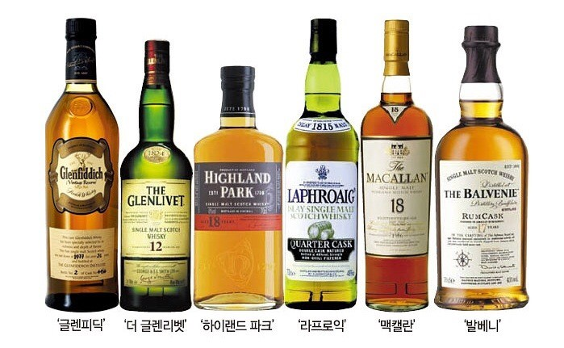

- 위스키
- 브랜디
- 보드카
위스키
위스키(Whisky 또는 Whiskey, 문화어: 위스끼)는 맥아 및 기타 곡류를 당화 발효시킨 발효주를 증류하여 만든 술이다. 주로 보리, 옥수수, 호밀, 밀 등의 곡물이 원료가 된다. 증류 후에는 나무 통에 넣어 숙성시키는게 보통이다.
동방의 증류기술이 중세 십자군 전쟁을 통해 서양에 전래되어 후에 아일랜드를 거쳐 스코틀랜드에 전파되어 위스키가 탄생한 것으로 알려져 있다. 십자군 전쟁에 참여했던 가톨릭 수사들에 의해 아랍의 증류 기술이 유럽에 전해져 증류주를 만들게 된 것이다.
오늘날 위스키의 생산지로 유명한 국가는 스코틀랜드, 아일랜드, 미국, 캐나다, 일본이며 그 외에 대만, 인도, 독일, 호주 등에서도 위스키를 생산한다. 독자적인 위스키 문화를 발달시킨 아일랜드, 미국, 캐나다를 제외한 국가는 관례적으로 스카치 위스키의 제조방식과 분류 규정을 따르는 경향이 있다.
스카치 위스키와 아이리시 위스키는 흔히 원료 곡물에 따라 몰트 위스키, 그레인 위스키, 블랜디드 위스키 등으로 분류되어 왔다. 엄밀하게는 각국의 법령이나 규정에 따라 분류된다. 스카치 위스키는 2009년의 스카치 위스키 규정(The Scotch Whisky Regulations 2009)에 따라 싱글 몰트 위스키, 싱글 그레인 위스키, 블렌디드 몰트 위스키. 블렌디드 그레인 위스키. 블렌디드 위스키의 다섯 가지로 분류된다. 아이리시 위스키는 아일랜드 농림부의 2014년 기술 규정(Department of Agriculture's 2014 technical file)에 따라 싱글 몰트 위스키, 싱글 그레인 위스키, 싱글 포트 스틸 위스키, 그레인 위스키의 네 가지로 분류된다.
아메리칸 위스키는 관습적으로 버번 위스키, 테네시 위스키 등 지명을 딴 명칭으로 분류되어 왔으며, 미합중국연방규정집(U.S. Code of Federal Regulations)에서는 라이 위스키, 라이 몰트 위스키, 몰트 위스키, 휘트 위스키. 버번 위스키. 콘 위스키로 분류한다. 버번(Bourbon)은 켄터키 주 버번 카운티라는 지명에서 온 명칭이기는 하나, 현대에는 꼭 버번 카운티에서 생산된 위스키만을 가리키지는 않게 되었다. 가령 테네시 위스키도 버번 위스키의 일종으로 간주된다.
